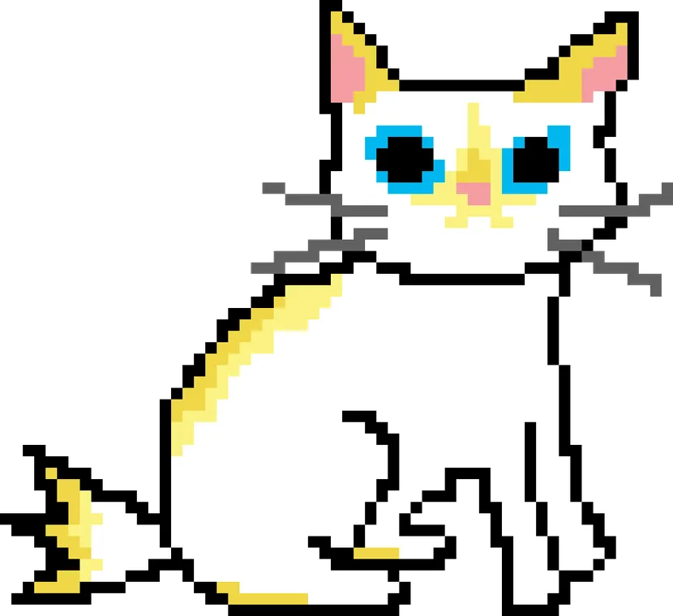
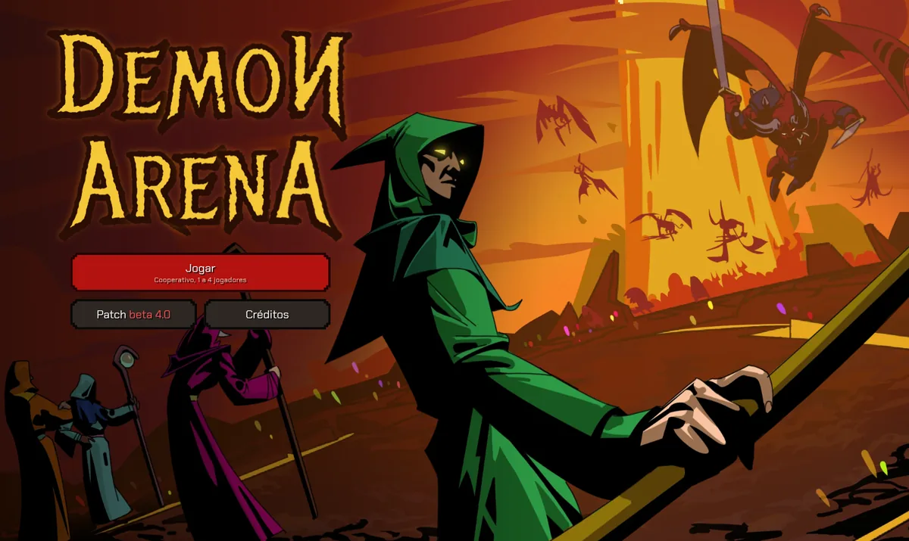
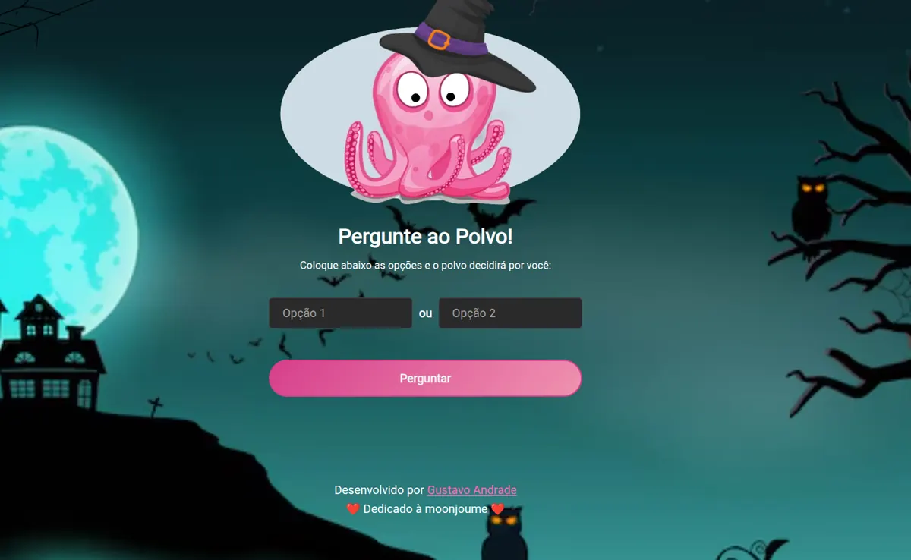

Jogo Chinela Destroyer Jogo de plataforma vertical, do sprite ao código Jogar no navegadorJogue direto no navegador sem precisar baixar nada

Jogo Chinela Destroyer Jogo de plataforma vertical, do sprite ao código Jogar no navegador
Jogo Demon Arena Horda cooperativa de 1 a 4 jogadores em campanha de oito fases, com servidor autoritativo próprio Jogar no navegador
Projeto pessoal Pergunte ao Polvo Recriação de um site que saiu do ar, hoje em cerca de 1.200 acessos por dia Abrir o site